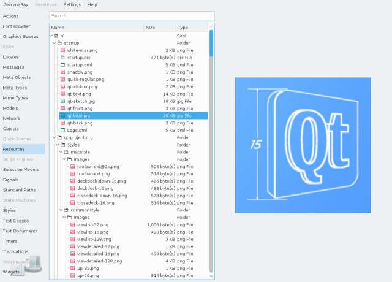

The resource browser view allows to inspect the content of assets compiled into the application binary using the QResource system. The tree view on the left side shows the file and folder hierarchy, the content view on the right allows to inspect the file content if it is a supported text or image format.

The context menu on the folder tree on the left side allows to save individual files or entire folders to disk. This also works for remote embedded targets.
When using compiled-in QML code using the QResource system, source code navigation from the Qt Quick 2 Inspector automatically selects the QResource browser, navigate to the source file, and open it at the corresponding line.